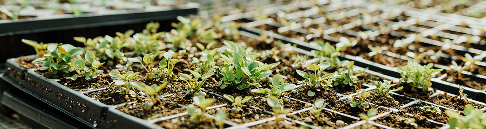

☰
Accueil
Type de Plantes
Conseils
Contacts
Aquatiques
Plantes Flottantes
Plantes immergées
Plantes émergentes
Plantes à feuilles flottantes enracinées
Tropicales
Plantes à Feuillage Décoratif
Plantes à Fleurs Exotiques
Plantes Grimpantes
Plantes Fruitières Tropicales
Aquatiques Tropicales
Succulentes
Les Cactus
Les crassulacées
Les Aloe et les Gasteria
Euphorbes succulentes
Les Lithops & Les mini-Succulentes
Vivaces
Les Vivaces à Fleurs
Les Vivaces à Feuillage Décoratif
Vivaces Couvre-sol
Vivaces Grimpantes
Annuelles
Annuelles à floraison abondante
Annuelles comestibles
Annuelles grimpantes
Annuelles retombantes